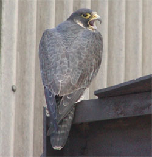
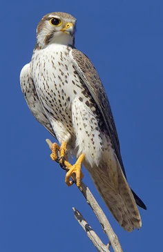

The falcon Dive
To reduce air resistance, the peregrine falcon enters a steep dive or stoop while tucking its wings tight to its body. It reaches amazing speeds while diving, frequently going above 200 mph (322 km/h).
Falconry In Ancient Times
Since ancient times, falcons have been utilized in the traditional hunting sport of falconry. In order to successfully hunt game birds, trained falcons operate with humans. A strong bond must develop between the falconer and the bird.Falcons were often associated with power, strength, and royalty. In ancient Egypt, falcons, specifically the Peregrine Falcon, were revered and associated with the god Horus, often depicted with the head of a falcon. Horus was the god of the sky, war, and protection. Falcons were seen as vigilant guardians due to their keen eyesight and ability to swiftly respond to threats. In some cultures, they were depicted as guardians of sacred spaces, emphasizing their protective qualities.
Widespread Distrubution

Falcons are found on every continent except Antarctica. They have adapted to a wide range of habitats, including deserts, grasslands, mountains, and coastal regions.
Habitat and Environment
Open grasslands and plains are popular habitats for falcons like the prairie falcon and kestrel. Due to their excellent visibility, these habitats offer a variety of hunting possibilities for prey like insects and rodents.
Because of their outstanding abilities and remarkable adaptations, falcons are genuinely remarkable birds that have piqued people's curiosity for millennia.